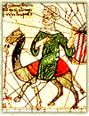

| |
A shopkeeper's account We shopkeepers of Cairo made great profits during the visit of Mansa Musa. This king of the Mali Empire crossed the desert with hundreds of camels, each loaded with gold! Such wealth is like nothing we have ever seen. The visitors from Mali were also willing to pay five gold coins for goods we sell to the people of Cairo for just one gold coin! Thus, one can easily see the potential for great profit that was presented to us at the bazaar, especially when you consider that Mansa Musa had to obtain provisions for the thousands of people who accompanied him. Of course, there were those who grumbled that the visitors from Mali caused unwanted inflation with their lavish spending, but we shopkeepers had no complaints. Indeed, we can only pray to Allah that other visitors with such great wealth and generosity also come to Cairo. |
 |